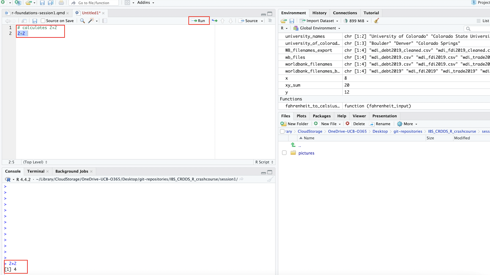

R Foundations: Objects and Data Structures
1 R and R Studio Installation
If you haven’t already, please go ahead and install both the R and RStudio applications. R and RStudio must be installed separately; you should install R first, and then RStudio. The R application is a bare-bones computing environment that supports statistical computing using the R programming language; RStudio is a visually appealing, feature-rich, and user-friendly interface that allows users to interact with this environment in an intuitive way. Once you have both applications installed, you don’t need to open up R and RStudio separately; you only need to open and interact with RStudio (which will run R in the background).
Please follow these instructions to download R and R Studio; make sure you download the version of R appropriate for your operating system.
2 The R Studio Interface
Now that we’ve installed and opened up RStudio, let’s familiarize ourselves with the RStudio interface. When we open up RStudio, we’ll see a window that looks something like this:
If your interface doesn’t look exactly like this, it shouldn’t be a problem; we would expect to see minor cosmetic differences in the appearance of the interface across operating systems and computers (based on how they’re configured). However, you should see four distinct windows within the larger RStudio interface:
- The top-left window is known as the Source window.
- The Source window is where we can write our R scripts (including the code associated with this tutorial), and execute those scripts. We can also type in R code into the “Console” window (bottom-left window), but it is preferable to write our code in a script within the source window. That’s because scripts can be saved (while code written into the console cannot); writing scripts therefore allows us to keep track of what we’re doing, and facilitates the reproducibility of our work. Note that in some cases, we may not see a Source window when we first open RStudio. In that case, to start a new script, simply click the
Filebutton on the RStudio menu bar, scroll down toNew Filebutton, and then selectR Scriptfrom the menu bar that opens up. - It’s also worth noting that the outputs of certain functions will appear in the Source window. In the context of our tutorial, when we want to view our datasets, we will use the
View()function, which will display the relevant data within a new tab in the Source window.
- The Source window is where we can write our R scripts (including the code associated with this tutorial), and execute those scripts. We can also type in R code into the “Console” window (bottom-left window), but it is preferable to write our code in a script within the source window. That’s because scripts can be saved (while code written into the console cannot); writing scripts therefore allows us to keep track of what we’re doing, and facilitates the reproducibility of our work. Note that in some cases, we may not see a Source window when we first open RStudio. In that case, to start a new script, simply click the
- The top-right window is the Environment/History pane of the RStudio interface.
- The “Environment” tab of this window provides information on the datasets we’ve loaded into RStudio, as well as objects we have defined (we’ll talk about objects more later in the tutorial). -The “History” tab of the window provides a record of the R commands we’ve run in a given session.
- The bottom-right window is the Files/Plots/Packages/Help/Viewer window.
- The “Files” tab displays our computer’s directories and file structures and allows us to navigate through them without having to leave the R environment.
- The “Plots” tab is the tab where we can view any visualizations that we create. Within the “Plots” tab, make note of the “Zoom” button, which we can use to enlarge the display of our visualizations if they’re too compressed in the “Plots” window. Also, note the “Export” button within the “Plots” tab (next to the “Zoom” button); we can use this button to export the displayed visualization to a .png or .jpeg file that can be used outside of RStudio.
- The “Packages” tab provides information on which packages have been installed, as well as which packages are currently loaded (more on packages in Sections 2.3 and 2.4 below)
- The “Help” tab displays documentation for R packages and functions. If you want to know more about how a package or function work, we can simply type a “?” followed by the package or function’s name (no space between the question mark and the name) and relevant information will be displayed within the “Help” tab.
- The “Viewer” tab displays HTML output. If we write code that generates an HTML file, we can view it within the “Viewer” tab.
- The bottom-left window is the Console/Terminal/Jobs window.
- The “Console” tab is where we can see our code execute when we run our scripts, as well as certain outputs produced by those scripts. In addition, if there are any error or warning messages, they will be printed to the “Console” tab. We can also type code directly into the console, but as we noted earlier, it is better practice to write our code in a script and then run it from there.
- The “Terminal”, “Jobs” tabs are not relevant for our workshop. We’ll briefly provide an overview of “R Markdown” towards the end of the lesson.
We’re now ready to begin writing some basic code in R. Please go ahead and open up a new script, and follow along by typing the code as we go. To open up a new script, go to File, then click New File, then select R Script.
3 R as a Calculator
At its most basic level, R can be used as a calculator. For instance:
# calculates 2+2
2+2[1] 4When you type this code out in your script, it should look something like this:

To run the code, you can highlight it and click the Run button (boxed in red). Alternatively, you can place the cursor on the line of code you’d like to run, and use a keyboard shortcut to run the code. On a Mac, the shortcut is clicking Command + Shift + Return. If you are using Windows, the keyboard shortcut to run the current line of code should be Ctrl + Enter.
You should go ahead and save the script in a convenient location by clicking File and then Save As. You should periodically save your work. After you close your R Session, you can always open your saved script, and quickly run the entire script to reproduce your work from prior sessions. To reproduce more than one line of code, entire script, simply highlight the entire script and click the Run button in the R Studio interface. On a Mac, the shortcut for running all of the code in your script is Cmd + Option + R. On a Windows machine, the shortcut to run the entirety of a script is Ctrl + Shift + Enter.
Before proceeding, one final thing you should note is that the actual code, 2+2, was preceded by a “comment” that was preceded by a #; above, the comment was rather trivial, since it’s fairly self evident what the code was doing. But pretty soon, our code will no longer be self evident, and code comments will be an essential way of documenting our work, and communicating with others who might read our code, as well as our future selves. The # sign is always used to introduce a comment, and ensures that any text that comes after it will indeed be interpreted as a comment, rather than as code.
Now, let’s try some more mathematical operations:
# calculates 65 to the power of 4
65^4[1] 17850625# calculates the sum of 24 and 4, divided by 7
(24+4)/7[1] 4# calculates 2.78 subtracted from 10.453
10.453-2.78[1] 7.673While this is a useful and logical starting point, the possibility of assigning values to objects (or variables) considerably increases the scope of the operations we are able to carry out. We turn to object assignment in the next sub-section.
4 Object Assignment and Manipulation
The concept of object (or variable) assignment is a fundamental concept when working in a scripting environment; indeed, the ability to easily assign values to objects is what allows us to easily and intuitively manipulate and process our data in a programmatic setting. To better understand the mechanics of object assignment, consider the following: